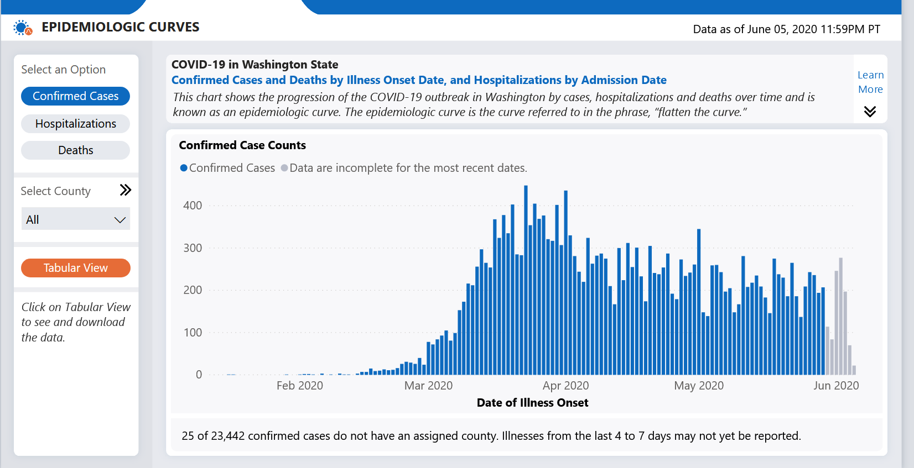
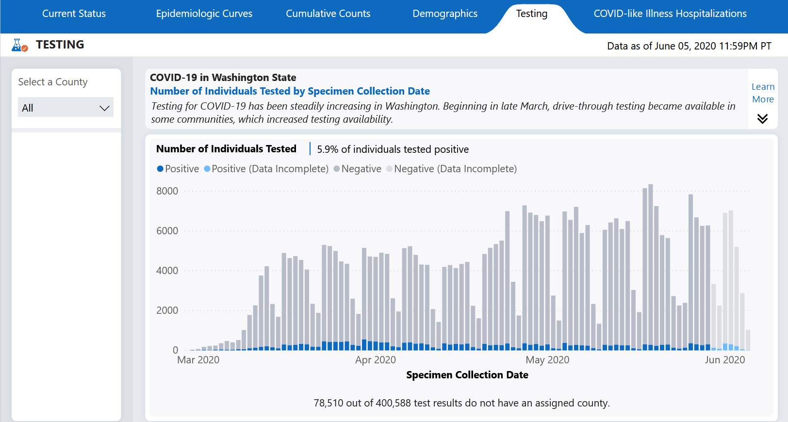
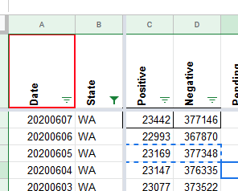
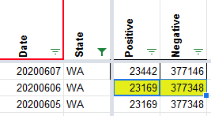

[WA Historicals]
Washington State
Washington regularly reclassifies their cases based on illness onset. The new positive cases from the daily dashboard (and the screenshots captured by CTP) do not match the epi curve in Washington state.
Washington cases were obtained from PowerBI tab 2 (via JSON) 
Washington tests were obtained from PowerBI tab 5 (via JSON) 
Raw before and after data was saved in this spreadsheet
Patch was applied to the following day numbers to prevent artificial drop BEFORE 
AFTER 
Comments
stale[bot] commented on July 2, 2020 at 9:23 pm
This issue has been closed because it was stale for 15 days, and there was no further activity on it for 10 days. You can feel free to re-open it if the issue is important, and label it as “not stale.”
This issue has been automatically marked as stale because it has not had recent activity. It will be closed if no further activity occurs. Thank you for your contributions!